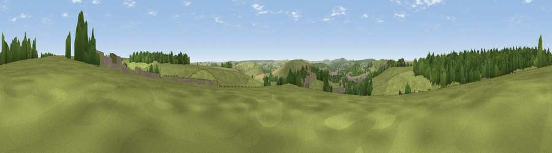

Viewpoint near Bishopstrow
#37713 in England · top 75% of its area beats it · near BishopstrowThe view, rendered

A 360° render of this exact spot computed from the terrain model, tree cover and land cover — summer colours, afternoon light, calibrated against photographs of famous viewpoints. Real trees, hedges and buildings will differ in detail.
The panorama
Grey silhouette: terrain skyline in each direction (720 bearings, Earth curvature and refraction included). Dashed green: skyline with trees (+15 m) and buildings (+8 m) as obstacles. Blue strip: how far the ground is visible on each bearing.
Where the view opens
Wedge length = distance to the farthest visible ground on that bearing (vegetation-aware). Rings at 10, 25 and 50 km.
What fills the view
66% grassland · 25% woodland · 5% cropland · 4% built-up
Angular shares of the visible panorama (visual magnitude), not map area. Landscape diversity 0.39 (0–1 Shannon).
Key numbers
More beautiful places nearby
The staircase of upgrades: each row has a higher view potential than everything closer. Driving times are estimates from straight-line distance, calibrated against real road routing — check an actual route before setting out.
| Place | Direction | Drive | Score |
|---|---|---|---|
| Viewpoint near Bratton | ENE · 1 km | ~4 min | 35.4 |
| Arn Hill Down | WSW · 3 km | ~7 min | 61.9 |
| Viewpoint near Upton Scudamore | WNW · 3 km | ~8 min | 65.8 |
| Viewpoint near Upton Scudamore | NW · 3 km | ~8 min | 67.0 |
| Viewpoint near Westbury | NNW · 4 km | ~9 min | 71.3 |
| Viewpoint near Bratton | N · 4 km | ~10 min | 73.2 |
| Cley Hill | WSW · 7 km | ~14 min | 76.8 |
| Viewpoint near Lamyatt | WSW · 26 km | ~42 min | 77.8 |
51.22503, -2.13993 · source: screening · position refined by local search. Computed location — check access rights before visiting.